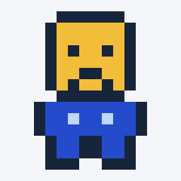
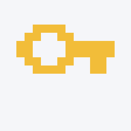
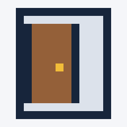
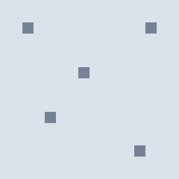
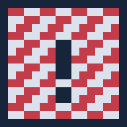
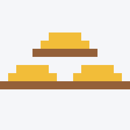

Optionale Piktogramme für den Tresorraub
Sie müssen kein eigenes Motiv entwerfen. Alle Beispiele dürfen unverändert verwendet und beliebig angepasst werden. Der Lernauftrag bleibt: eine verwendete SDL2-Funktion nachschlagen, erklären, ihren Fehlerindikator behandeln und einen sichtbaren Parameter selbst verändern.
Beispiele verwenden
Alle C-Beispiele und SVG-Vorschauen im Startmaterial herunterladen. Die Schnittstellen und die Implementierung liegen unter piktogramme/. Das fertige Makefile bindet sie bereits ein. Mit ./programm --galerie sehen Sie alle Motive im SDL2-Fenster, in der unten angegebenen Reihenfolge.
Jede Zeichenfunktion erwartet den bereitgestellten Renderer, x, y und eine Skalierung. x und y bezeichnen die linke obere Ecke des Motivs in logischen Pixeln. Die Skalierung ist die Anzahl Pixel pro Rasterzelle; 4 ergibt ein 64 × 64 großes Motiv. Zulässig sind Skalierungen 1 bis 16 und Koordinaten jeweils von −10000 bis 10000. Motive außerhalb des Zeichenbereichs können abgeschnitten oder unsichtbar sein, ohne dass dies ein SDL-Fehler ist.
In Ihrer Funktion zeichne können Sie zum Beispiel einen passenden Aufruf direkt zurückgeben. Dieses optionale Nutzungsbeispiel übernimmt sowohl Motiv als auch Fehlerweitergabe:
return zeichne_schluessel(renderer, 120, 90, 6);Wählen Sie Motiv und Parameter selbst. Bei mehreren Aufrufen prüfen Sie jedes Ergebnis und geben einen Fehler unmittelbar weiter. Die Hilfsfunktionen verwenden SDL_SetRenderDrawColor und SDL_RenderDrawLine. Recherchieren Sie mindestens einen davon. Der interne Rasteraufbau ist vorbereitet und noch kein Pflichtstoff zu Arrays oder Pointern.
Die SVG-Vorschauen sind aus denselben Farb- und Rasterdaten erzeugt wie die C-Beispiele. Sie sind keine zu ladenden Spieltexturen: Die SDL-Fassung zeichnet die Motive selbst, ohne SDL_image, Schriftarten oder externe Bilddateien.

zeichne_spielfigur_froh
zeichne_spielfigur_entdeckt
zeichne_waechter
zeichne_schluessel
zeichne_tuer_geschlossen
zeichne_tuer_offenzeichne_tresor_geschlossenzeichne_tresor_leer
zeichne_ausgangzeichne_muenze
zeichne_wand
zeichne_boden
zeichne_ueberwachung
zeichne_beuteBeobachten und verändern
Die Namen beschreiben lediglich die Darstellung: Ein Türbild öffnet keine Spieltür, und ein Überwachungsbild erkennt keine Spielfigur. Beides wird erst später mit dem Spielzustand verbunden. Ein Bild zu verschieben ist deshalb noch keine implementierte Bewegung.
Alle Rastermotive sind eigens für dieses Kursmaterial erstellt und dürfen in den Kursprojekten verwendet werden. Transparente Rasterzellen lassen den Hintergrund unverändert; Linien, Gesichtsausdruck und Schraffur unterscheiden Zustände zusätzlich zur Farbe.
Die Farbwerte stehen in piktogramme.c in der Funktion farbe_setzen und dürfen für eigene Versuche geändert werden. Eine Änderung gilt für alle Motive, die diese Farbe verwenden.